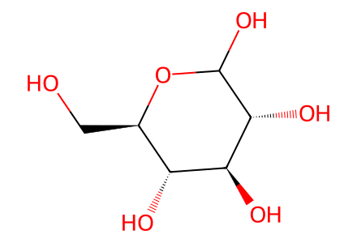
OC[C@H]1OC(O)[C@H](O)[C@@H](O)[C@@H]1OAll source-drawn forward compounds in Schemes 2-4 and 6-7, including unsuccessful oxidative-coupling precursor 4 and casuarictin branch. Literature-known 6,13,19,32 are preparation boundaries; transformations explicitly shown from glucose and methyl gallate retained. HHDP axial S assignments retained as metadata, not encoded by standard tetrahedral isomeric SMILES. Independent axial/chair stereochemistry review remains required. Facts compiled deterministically; independent review pending.
完整 JSON · 逐步 CSV · 路线序列 · SDF · HRMS 核对
| 事件 | 分子连接 | 报告产率 | Canonical reaction SMILES |
|---|---|---|---|
| E01 | 14 + allyl-alcohol + benzaldehyde-dimethyl-acetal → 10 | 10: 56% | C=CCO.COC(OC)c1ccccc1.OC[C@H]1OC(O)[C@H](O)[C@@H](O)[C@@H]1O>>C=CCO[C@H]1O[C@@H]2COC(c3ccccc3)O[C@H]2[C@H](O)[C@H]1O |
| E02 | 10 + 6 → 15 | 15: 99% | C=CCO[C@H]1O[C@@H]2COC(c3ccccc3)O[C@H]2[C@H](O)[C@H]1O.CC(C)(C)[Si](C)(C)Oc1cc(C(=O)O)cc(O[Si](C)(C)C(C)(C)C)c1OCc1ccccc1>>C=CCO[C@H]1O[C@@H]2COC(c3ccccc3)O[C@H]2[C@H](OC(=O)c2cc(O[Si](C)(C)C(C)(C)C)c(OCc3ccccc3)c(O[Si](C)(C)C(C)(C)C)c2)[C@H]1OC(=O)c1cc(O[Si](C)(C)C(C)(C)C)c(OCc2ccccc2)c(O[Si](C)(C)C(C)(C)C)c1 |
| E03 | 15 → 9 | 9: 89% | C=CCO[C@H]1O[C@@H]2COC(c3ccccc3)O[C@H]2[C@H](OC(=O)c2cc(O[Si](C)(C)C(C)(C)C)c(OCc3ccccc3)c(O[Si](C)(C)C(C)(C)C)c2)[C@H]1OC(=O)c1cc(O[Si](C)(C)C(C)(C)C)c(OCc2ccccc2)c(O[Si](C)(C)C(C)(C)C)c1>>C=CCO[C@H]1O[C@@H]2COC(c3ccccc3)O[C@H]2[C@H](OC(=O)c2cc(O)c(OCc3ccccc3)c(O)c2)[C@H]1OC(=O)c1cc(O)c(OCc2ccccc2)c(O)c1 |
| E04 | 9 → 16 | 16: 77% | C=CCO[C@H]1O[C@@H]2COC(c3ccccc3)O[C@H]2[C@H](OC(=O)c2cc(O)c(OCc3ccccc3)c(O)c2)[C@H]1OC(=O)c1cc(O)c(OCc2ccccc2)c(O)c1>>C=CCO[C@H]1O[C@@H]2COC(c3ccccc3)O[C@H]2[C@@H]2OC(=O)c3cc(O)c(OCc4ccccc4)c(O)c3-c3c(cc(O)c(OCc4ccccc4)c3O)C(=O)O[C@@H]12 |
| E06 | 17 → 8 | 8: 73% | C=CCO[C@H]1O[C@@H]2COC(c3ccccc3)O[C@H]2[C@@H]2OC(=O)c3cc(OCc4ccccc4)c(OCc4ccccc4)c(OCc4ccccc4)c3-c3c(cc(OCc4ccccc4)c(OCc4ccccc4)c3OCc3ccccc3)C(=O)O[C@@H]12>>O=C1O[C@H]2[C@@H]3OC(c4ccccc4)OC[C@H]3OC(O)[C@@H]2OC(=O)c2cc(OCc3ccccc3)c(OCc3ccccc3)c(OCc3ccccc3)c2-c2c1cc(OCc1ccccc1)c(OCc1ccccc1)c2OCc1ccccc1 |
| E09 | 20 → 5 | 5: 99% | O=C(O[C@@H]1O[C@@H]2COC(c3ccccc3)O[C@H]2[C@@H]2OC(=O)c3cc(OCc4ccccc4)c(OCc4ccccc4)c(OCc4ccccc4)c3-c3c(cc(OCc4ccccc4)c(OCc4ccccc4)c3OCc3ccccc3)C(=O)O[C@@H]12)c1cc(OCc2ccccc2)c(OCc2ccccc2)c(OCc2ccccc2)c1>>O=C(O[C@@H]1O[C@H](CO)[C@@H](O)[C@@H]2OC(=O)c3cc(OCc4ccccc4)c(OCc4ccccc4)c(OCc4ccccc4)c3-c3c(cc(OCc4ccccc4)c(OCc4ccccc4)c3OCc3ccccc3)C(=O)O[C@@H]12)c1cc(OCc2ccccc2)c(OCc2ccccc2)c(OCc2ccccc2)c1 |
| E13 | 25 → 12 | 12: 89% | C=CCOc1cc(C(=O)OC(C)(C)C)cc(OCC=C)c1OCOC>>C=CCOc1cc(C(=O)OC(C)(C)C)cc(OCC=C)c1O |
| E15 | 11 → 26 | 26: 49% | C=CCOc1cc(C(=O)OC(C)(C)C)cc(OCC=C)c1Oc1c(C(=O)OCc2ccccc2)cc(OCc2ccccc2)c(OCc2ccccc2)c1OCc1ccccc1>>CC(C)(C)OC(=O)c1cc(O)c(Oc2c(C(=O)OCc3ccccc3)cc(OCc3ccccc3)c(OCc3ccccc3)c2OCc2ccccc2)c(O)c1 |
| E16 | 26 → 27 | 27: 98% | CC(C)(C)OC(=O)c1cc(O)c(Oc2c(C(=O)OCc3ccccc3)cc(OCc3ccccc3)c(OCc3ccccc3)c2OCc2ccccc2)c(O)c1>>O=C(O)c1cc(O)c(Oc2c(C(=O)OCc3ccccc3)cc(OCc3ccccc3)c(OCc3ccccc3)c2OCc2ccccc2)c(O)c1 |
| E20 | 29 → 4 | 4: 88% | CC(C)(C)[Si](C)(C)Oc1cc(C(=O)O[C@H]2[C@@H]3OC(=O)c4cc(OCc5ccccc5)c(OCc5ccccc5)c(OCc5ccccc5)c4-c4c(cc(OCc5ccccc5)c(OCc5ccccc5)c4OCc4ccccc4)C(=O)O[C@H]3[C@H](OC(=O)c3cc(OCc4ccccc4)c(OCc4ccccc4)c(OCc4ccccc4)c3)O[C@@H]2COC(=O)c2cc(O[Si](C)(C)C(C)(C)C)c(Oc3c(C(=O)OCc4ccccc4)cc(OCc4ccccc4)c(OCc4ccccc4)c3OCc3ccccc3)c(O[Si](C)(C)C(C)(C)C)c2)cc(O[Si](C)(C)C(C)(C)C)c1OCc1ccccc1>>O=C(OC[C@H]1O[C@@H](OC(=O)c2cc(OCc3ccccc3)c(OCc3ccccc3)c(OCc3ccccc3)c2)[C@@H]2OC(=O)c3cc(OCc4ccccc4)c(OCc4ccccc4)c(OCc4ccccc4)c3-c3c(cc(OCc4ccccc4)c(OCc4ccccc4)c3OCc3ccccc3)C(=O)O[C@H]2[C@@H]1OC(=O)c1cc(O)c(OCc2ccccc2)c(O)c1)c1cc(O)c(Oc2c(C(=O)OCc3ccccc3)cc(OCc3ccccc3)c(OCc3ccccc3)c2OCc2ccccc2)c(O)c1 |
| E24 | 36 → 33 | 33: 82% | COCOc1c(O[Si](C)(C)C(C)(C)C)cc(C(=O)OC[C@H]2O[C@@H](OC(=O)c3cc(OCc4ccccc4)c(OCc4ccccc4)c(OCc4ccccc4)c3)[C@@H]3OC(=O)c4cc(OCc5ccccc5)c(OCc5ccccc5)c(OCc5ccccc5)c4-c4c(cc(OCc5ccccc5)c(OCc5ccccc5)c4OCc4ccccc4)C(=O)O[C@H]3[C@@H]2OC(=O)c2cc(O[Si](C)(C)C(C)(C)C)c(OCc3ccccc3)c(O[Si](C)(C)C(C)(C)C)c2)cc1O[Si](C)(C)C(C)(C)C>>COCOc1c(O)cc(C(=O)OC[C@H]2O[C@@H](OC(=O)c3cc(OCc4ccccc4)c(OCc4ccccc4)c(OCc4ccccc4)c3)[C@@H]3OC(=O)c4cc(OCc5ccccc5)c(OCc5ccccc5)c(OCc5ccccc5)c4-c4c(cc(OCc5ccccc5)c(OCc5ccccc5)c4OCc4ccccc4)C(=O)O[C@H]3[C@@H]2OC(=O)c2cc(O)c(OCc3ccccc3)c(O)c2)cc1O |
| E29 | 39 → 31 | 31: 92% | COCOc1c(OCc2ccccc2)cc2c(c1OCc1ccccc1)-c1c(cc(OCc3ccccc3)c(OCc3ccccc3)c1OCc1ccccc1)C(=O)O[C@H]1[C@@H]3OC(=O)c4cc(OCc5ccccc5)c(OCc5ccccc5)c(OCc5ccccc5)c4-c4c(cc(OCc5ccccc5)c(OCc5ccccc5)c4OCc4ccccc4)C(=O)O[C@H]3[C@H](OC(=O)c3cc(OCc4ccccc4)c(OCc4ccccc4)c(OCc4ccccc4)c3)O[C@@H]1COC2=O>>O=C(O[C@@H]1O[C@@H]2COC(=O)c3cc(OCc4ccccc4)c(O)c(OCc4ccccc4)c3-c3c(cc(OCc4ccccc4)c(OCc4ccccc4)c3OCc3ccccc3)C(=O)O[C@H]2[C@@H]2OC(=O)c3cc(OCc4ccccc4)c(OCc4ccccc4)c(OCc4ccccc4)c3-c3c(cc(OCc4ccccc4)c(OCc4ccccc4)c3OCc3ccccc3)C(=O)O[C@@H]12)c1cc(OCc2ccccc2)c(OCc2ccccc2)c(OCc2ccccc2)c1 |
| E31 | 40 → 41 | 41: 100% | COCOc1c(OCc2ccccc2)cc(C(=O)OCc2ccccc2)cc1OCc1ccccc1>>COCOc1c(OCc2ccccc2)cc(C(=O)OCc2ccccc2)c(Br)c1OCc1ccccc1 |
| E32 | 41 → 42 | 42: 87% | COCOc1c(OCc2ccccc2)cc(C(=O)OCc2ccccc2)c(Br)c1OCc1ccccc1>>O=C(OCc1ccccc1)c1cc(OCc2ccccc2)c(O)c(OCc2ccccc2)c1Br |
| E05 | 16 + BnBr → 17 | 17: 83% | BrCc1ccccc1.C=CCO[C@H]1O[C@@H]2COC(c3ccccc3)O[C@H]2[C@@H]2OC(=O)c3cc(O)c(OCc4ccccc4)c(O)c3-c3c(cc(O)c(OCc4ccccc4)c3O)C(=O)O[C@@H]12>>C=CCO[C@H]1O[C@@H]2COC(c3ccccc3)O[C@H]2[C@@H]2OC(=O)c3cc(OCc4ccccc4)c(OCc4ccccc4)c(OCc4ccccc4)c3-c3c(cc(OCc4ccccc4)c(OCc4ccccc4)c3OCc3ccccc3)C(=O)O[C@@H]12 |
| E07 | 8 + CCl3CN → 18 | 18: 93% | N#CC(Cl)(Cl)Cl.O=C1O[C@H]2[C@@H]3OC(c4ccccc4)OC[C@H]3OC(O)[C@@H]2OC(=O)c2cc(OCc3ccccc3)c(OCc3ccccc3)c(OCc3ccccc3)c2-c2c1cc(OCc1ccccc1)c(OCc1ccccc1)c2OCc1ccccc1>>N=C(O[C@H]1O[C@@H]2COC(c3ccccc3)O[C@H]2[C@@H]2OC(=O)c3cc(OCc4ccccc4)c(OCc4ccccc4)c(OCc4ccccc4)c3-c3c(cc(OCc4ccccc4)c(OCc4ccccc4)c3OCc3ccccc3)C(=O)O[C@@H]12)C(Cl)(Cl)Cl |
| E08 | 18 + 19 → 20 | 20: 99% | N=C(O[C@H]1O[C@@H]2COC(c3ccccc3)O[C@H]2[C@@H]2OC(=O)c3cc(OCc4ccccc4)c(OCc4ccccc4)c(OCc4ccccc4)c3-c3c(cc(OCc4ccccc4)c(OCc4ccccc4)c3OCc3ccccc3)C(=O)O[C@@H]12)C(Cl)(Cl)Cl.O=C(O)c1cc(OCc2ccccc2)c(OCc2ccccc2)c(OCc2ccccc2)c1>>O=C(O[C@@H]1O[C@@H]2COC(c3ccccc3)O[C@H]2[C@@H]2OC(=O)c3cc(OCc4ccccc4)c(OCc4ccccc4)c(OCc4ccccc4)c3-c3c(cc(OCc4ccccc4)c(OCc4ccccc4)c3OCc3ccccc3)C(=O)O[C@@H]12)c1cc(OCc2ccccc2)c(OCc2ccccc2)c(OCc2ccccc2)c1 |
| E10 | 21 + MOMCl → 22 | 22: 53% | COC(=O)c1cc(O)c(O)c(O)c1.COCCl>>COCOc1c(O)cc(C(=O)OC)cc1O |
| E11a | 22 + allyl-Br → 23 | not reported | C=CCBr.COCOc1c(O)cc(C(=O)OC)cc1O>>C=CCOc1cc(C(=O)OC)cc(OCC=C)c1OCOC |
| E11b | 23 → 24 | 24: 74% | C=CCOc1cc(C(=O)OC)cc(OCC=C)c1OCOC>>C=CCOc1cc(C(=O)O)cc(OCC=C)c1OCOC |
| E12 | 24 + t-BuOH → 25 | 25: 62% | C=CCOc1cc(C(=O)O)cc(OCC=C)c1OCOC.CC(C)(C)O>>C=CCOc1cc(C(=O)OC(C)(C)C)cc(OCC=C)c1OCOC |
| E14 | 12 + 13 → 11 | 11: 29% | C=CCOc1cc(C(=O)OC(C)(C)C)cc(OCC=C)c1O.O=C(OCc1ccccc1)c1cc(OCc2ccccc2)c(OCc2ccccc2)c(OCc2ccccc2)c1Br>>C=CCOc1cc(C(=O)OC(C)(C)C)cc(OCC=C)c1Oc1c(C(=O)OCc2ccccc2)cc(OCc2ccccc2)c(OCc2ccccc2)c1OCc1ccccc1 |
| E17 | 27 + TBSCl → 7 | 7: 82% | CC(C)(C)[Si](C)(C)Cl.O=C(O)c1cc(O)c(Oc2c(C(=O)OCc3ccccc3)cc(OCc3ccccc3)c(OCc3ccccc3)c2OCc2ccccc2)c(O)c1>>CC(C)(C)[Si](C)(C)Oc1cc(C(=O)O)cc(O[Si](C)(C)C(C)(C)C)c1Oc1c(C(=O)OCc2ccccc2)cc(OCc2ccccc2)c(OCc2ccccc2)c1OCc1ccccc1 |
| E18 | 5 + 7 → 28 | 28: 73% | CC(C)(C)[Si](C)(C)Oc1cc(C(=O)O)cc(O[Si](C)(C)C(C)(C)C)c1Oc1c(C(=O)OCc2ccccc2)cc(OCc2ccccc2)c(OCc2ccccc2)c1OCc1ccccc1.O=C(O[C@@H]1O[C@H](CO)[C@@H](O)[C@@H]2OC(=O)c3cc(OCc4ccccc4)c(OCc4ccccc4)c(OCc4ccccc4)c3-c3c(cc(OCc4ccccc4)c(OCc4ccccc4)c3OCc3ccccc3)C(=O)O[C@@H]12)c1cc(OCc2ccccc2)c(OCc2ccccc2)c(OCc2ccccc2)c1>>CC(C)(C)[Si](C)(C)Oc1cc(C(=O)OC[C@H]2O[C@@H](OC(=O)c3cc(OCc4ccccc4)c(OCc4ccccc4)c(OCc4ccccc4)c3)[C@@H]3OC(=O)c4cc(OCc5ccccc5)c(OCc5ccccc5)c(OCc5ccccc5)c4-c4c(cc(OCc5ccccc5)c(OCc5ccccc5)c4OCc4ccccc4)C(=O)O[C@H]3[C@@H]2O)cc(O[Si](C)(C)C(C)(C)C)c1Oc1c(C(=O)OCc2ccccc2)cc(OCc2ccccc2)c(OCc2ccccc2)c1OCc1ccccc1 |
| E19 | 28 + 6 → 29 | 29: 85% | CC(C)(C)[Si](C)(C)Oc1cc(C(=O)O)cc(O[Si](C)(C)C(C)(C)C)c1OCc1ccccc1.CC(C)(C)[Si](C)(C)Oc1cc(C(=O)OC[C@H]2O[C@@H](OC(=O)c3cc(OCc4ccccc4)c(OCc4ccccc4)c(OCc4ccccc4)c3)[C@@H]3OC(=O)c4cc(OCc5ccccc5)c(OCc5ccccc5)c(OCc5ccccc5)c4-c4c(cc(OCc5ccccc5)c(OCc5ccccc5)c4OCc4ccccc4)C(=O)O[C@H]3[C@@H]2O)cc(O[Si](C)(C)C(C)(C)C)c1Oc1c(C(=O)OCc2ccccc2)cc(OCc2ccccc2)c(OCc2ccccc2)c1OCc1ccccc1>>CC(C)(C)[Si](C)(C)Oc1cc(C(=O)O[C@H]2[C@@H]3OC(=O)c4cc(OCc5ccccc5)c(OCc5ccccc5)c(OCc5ccccc5)c4-c4c(cc(OCc5ccccc5)c(OCc5ccccc5)c4OCc4ccccc4)C(=O)O[C@H]3[C@H](OC(=O)c3cc(OCc4ccccc4)c(OCc4ccccc4)c(OCc4ccccc4)c3)O[C@@H]2COC(=O)c2cc(O[Si](C)(C)C(C)(C)C)c(Oc3c(C(=O)OCc4ccccc4)cc(OCc4ccccc4)c(OCc4ccccc4)c3OCc3ccccc3)c(O[Si](C)(C)C(C)(C)C)c2)cc(O[Si](C)(C)C(C)(C)C)c1OCc1ccccc1 |
| E22 | 5 + 34 → 35 | 35: 63% | COCOc1c(O[Si](C)(C)C(C)(C)C)cc(C(=O)O)cc1O[Si](C)(C)C(C)(C)C.O=C(O[C@@H]1O[C@H](CO)[C@@H](O)[C@@H]2OC(=O)c3cc(OCc4ccccc4)c(OCc4ccccc4)c(OCc4ccccc4)c3-c3c(cc(OCc4ccccc4)c(OCc4ccccc4)c3OCc3ccccc3)C(=O)O[C@@H]12)c1cc(OCc2ccccc2)c(OCc2ccccc2)c(OCc2ccccc2)c1>>COCOc1c(O[Si](C)(C)C(C)(C)C)cc(C(=O)OC[C@H]2O[C@@H](OC(=O)c3cc(OCc4ccccc4)c(OCc4ccccc4)c(OCc4ccccc4)c3)[C@@H]3OC(=O)c4cc(OCc5ccccc5)c(OCc5ccccc5)c(OCc5ccccc5)c4-c4c(cc(OCc5ccccc5)c(OCc5ccccc5)c4OCc4ccccc4)C(=O)O[C@H]3[C@@H]2O)cc1O[Si](C)(C)C(C)(C)C |
| E23 | 35 + 6 → 36 | 36: 92% | CC(C)(C)[Si](C)(C)Oc1cc(C(=O)O)cc(O[Si](C)(C)C(C)(C)C)c1OCc1ccccc1.COCOc1c(O[Si](C)(C)C(C)(C)C)cc(C(=O)OC[C@H]2O[C@@H](OC(=O)c3cc(OCc4ccccc4)c(OCc4ccccc4)c(OCc4ccccc4)c3)[C@@H]3OC(=O)c4cc(OCc5ccccc5)c(OCc5ccccc5)c(OCc5ccccc5)c4-c4c(cc(OCc5ccccc5)c(OCc5ccccc5)c4OCc4ccccc4)C(=O)O[C@H]3[C@@H]2O)cc1O[Si](C)(C)C(C)(C)C>>COCOc1c(O[Si](C)(C)C(C)(C)C)cc(C(=O)OC[C@H]2O[C@@H](OC(=O)c3cc(OCc4ccccc4)c(OCc4ccccc4)c(OCc4ccccc4)c3)[C@@H]3OC(=O)c4cc(OCc5ccccc5)c(OCc5ccccc5)c(OCc5ccccc5)c4-c4c(cc(OCc5ccccc5)c(OCc5ccccc5)c4OCc4ccccc4)C(=O)O[C@H]3[C@@H]2OC(=O)c2cc(O[Si](C)(C)C(C)(C)C)c(OCc3ccccc3)c(O[Si](C)(C)C(C)(C)C)c2)cc1O[Si](C)(C)C(C)(C)C |
| E21 | 22 + TBSCl → 34 | 34: 71% | CC(C)(C)[Si](C)(C)Cl.COCOc1c(O)cc(C(=O)OC)cc1O>>COCOc1c(O[Si](C)(C)C(C)(C)C)cc(C(=O)O)cc1O[Si](C)(C)C(C)(C)C |
| E25 | 33 → 37 | not reported | COCOc1c(O)cc(C(=O)OC[C@H]2O[C@@H](OC(=O)c3cc(OCc4ccccc4)c(OCc4ccccc4)c(OCc4ccccc4)c3)[C@@H]3OC(=O)c4cc(OCc5ccccc5)c(OCc5ccccc5)c(OCc5ccccc5)c4-c4c(cc(OCc5ccccc5)c(OCc5ccccc5)c4OCc4ccccc4)C(=O)O[C@H]3[C@@H]2OC(=O)c2cc(O)c(OCc3ccccc3)c(O)c2)cc1O>>COCOc1c(O)cc2c(c1O)-c1c(cc(O)c(OCc3ccccc3)c1O)C(=O)O[C@H]1[C@@H]3OC(=O)c4cc(OCc5ccccc5)c(OCc5ccccc5)c(OCc5ccccc5)c4-c4c(cc(OCc5ccccc5)c(OCc5ccccc5)c4OCc4ccccc4)C(=O)O[C@H]3[C@H](OC(=O)c3cc(OCc4ccccc4)c(OCc4ccccc4)c(OCc4ccccc4)c3)O[C@@H]1COC2=O |
| E26 | 37 → 38 | 38: 65% | COCOc1c(O)cc2c(c1O)-c1c(cc(O)c(OCc3ccccc3)c1O)C(=O)O[C@H]1[C@@H]3OC(=O)c4cc(OCc5ccccc5)c(OCc5ccccc5)c(OCc5ccccc5)c4-c4c(cc(OCc5ccccc5)c(OCc5ccccc5)c4OCc4ccccc4)C(=O)O[C@H]3[C@H](OC(=O)c3cc(OCc4ccccc4)c(OCc4ccccc4)c(OCc4ccccc4)c3)O[C@@H]1COC2=O>>O=C(O[C@@H]1O[C@@H]2COC(=O)c3cc(O)c(O)c(O)c3-c3c(cc(O)c(O)c3O)C(=O)O[C@H]2[C@@H]2OC(=O)c3cc(O)c(O)c(O)c3-c3c(cc(O)c(O)c3O)C(=O)O[C@@H]12)c1cc(O)c(O)c(O)c1 |
| E27 | 33 → 37 | not reported | COCOc1c(O)cc(C(=O)OC[C@H]2O[C@@H](OC(=O)c3cc(OCc4ccccc4)c(OCc4ccccc4)c(OCc4ccccc4)c3)[C@@H]3OC(=O)c4cc(OCc5ccccc5)c(OCc5ccccc5)c(OCc5ccccc5)c4-c4c(cc(OCc5ccccc5)c(OCc5ccccc5)c4OCc4ccccc4)C(=O)O[C@H]3[C@@H]2OC(=O)c2cc(O)c(OCc3ccccc3)c(O)c2)cc1O>>COCOc1c(O)cc2c(c1O)-c1c(cc(O)c(OCc3ccccc3)c1O)C(=O)O[C@H]1[C@@H]3OC(=O)c4cc(OCc5ccccc5)c(OCc5ccccc5)c(OCc5ccccc5)c4-c4c(cc(OCc5ccccc5)c(OCc5ccccc5)c4OCc4ccccc4)C(=O)O[C@H]3[C@H](OC(=O)c3cc(OCc4ccccc4)c(OCc4ccccc4)c(OCc4ccccc4)c3)O[C@@H]1COC2=O |
| E28 | 37 + BnBr → 39 | 39: 77% | BrCc1ccccc1.COCOc1c(O)cc2c(c1O)-c1c(cc(O)c(OCc3ccccc3)c1O)C(=O)O[C@H]1[C@@H]3OC(=O)c4cc(OCc5ccccc5)c(OCc5ccccc5)c(OCc5ccccc5)c4-c4c(cc(OCc5ccccc5)c(OCc5ccccc5)c4OCc4ccccc4)C(=O)O[C@H]3[C@H](OC(=O)c3cc(OCc4ccccc4)c(OCc4ccccc4)c(OCc4ccccc4)c3)O[C@@H]1COC2=O>>COCOc1c(OCc2ccccc2)cc2c(c1OCc1ccccc1)-c1c(cc(OCc3ccccc3)c(OCc3ccccc3)c1OCc1ccccc1)C(=O)O[C@H]1[C@@H]3OC(=O)c4cc(OCc5ccccc5)c(OCc5ccccc5)c(OCc5ccccc5)c4-c4c(cc(OCc5ccccc5)c(OCc5ccccc5)c4OCc4ccccc4)C(=O)O[C@H]3[C@H](OC(=O)c3cc(OCc4ccccc4)c(OCc4ccccc4)c(OCc4ccccc4)c3)O[C@@H]1COC2=O |
| E30 | 22 + BnCl + BnBr → 40 | 40: 66% | BrCc1ccccc1.COCOc1c(O)cc(C(=O)OC)cc1O.ClCc1ccccc1>>COCOc1c(OCc2ccccc2)cc(C(=O)OCc2ccccc2)cc1OCc1ccccc1 |
| E33 | 42 → 32 | not reported | O=C(OCc1ccccc1)c1cc(OCc2ccccc2)c(O)c(OCc2ccccc2)c1Br>>O=C(OCc1ccccc1)C1=C(Br)C(OCc2ccccc2)(OCc2ccccc2)C(=O)C(OCc2ccccc2)=C1 |
| E34 | 31 + 32 → 30 | not reported | O=C(OCc1ccccc1)C1=C(Br)C(OCc2ccccc2)(OCc2ccccc2)C(=O)C(OCc2ccccc2)=C1.O=C(O[C@@H]1O[C@@H]2COC(=O)c3cc(OCc4ccccc4)c(O)c(OCc4ccccc4)c3-c3c(cc(OCc4ccccc4)c(OCc4ccccc4)c3OCc3ccccc3)C(=O)O[C@H]2[C@@H]2OC(=O)c3cc(OCc4ccccc4)c(OCc4ccccc4)c(OCc4ccccc4)c3-c3c(cc(OCc4ccccc4)c(OCc4ccccc4)c3OCc3ccccc3)C(=O)O[C@@H]12)c1cc(OCc2ccccc2)c(OCc2ccccc2)c(OCc2ccccc2)c1>>O=C(OCc1ccccc1)C1=C(Oc2c(OCc3ccccc3)cc3c(c2OCc2ccccc2)-c2c(cc(OCc4ccccc4)c(OCc4ccccc4)c2OCc2ccccc2)C(=O)O[C@H]2[C@@H]4OC(=O)c5cc(OCc6ccccc6)c(OCc6ccccc6)c(OCc6ccccc6)c5-c5c(cc(OCc6ccccc6)c(OCc6ccccc6)c5OCc5ccccc5)C(=O)O[C@H]4[C@H](OC(=O)c4cc(OCc5ccccc5)c(OCc5ccccc5)c(OCc5ccccc5)c4)O[C@@H]2COC3=O)C(OCc2ccccc2)(OCc2ccccc2)C(=O)C(OCc2ccccc2)=C1 |
| E35 | 30 → 2 | 2: 36% | O=C(OCc1ccccc1)C1=C(Oc2c(OCc3ccccc3)cc3c(c2OCc2ccccc2)-c2c(cc(OCc4ccccc4)c(OCc4ccccc4)c2OCc2ccccc2)C(=O)O[C@H]2[C@@H]4OC(=O)c5cc(OCc6ccccc6)c(OCc6ccccc6)c(OCc6ccccc6)c5-c5c(cc(OCc6ccccc6)c(OCc6ccccc6)c5OCc5ccccc5)C(=O)O[C@H]4[C@H](OC(=O)c4cc(OCc5ccccc5)c(OCc5ccccc5)c(OCc5ccccc5)c4)O[C@@H]2COC3=O)C(OCc2ccccc2)(OCc2ccccc2)C(=O)C(OCc2ccccc2)=C1>>O=C(O[C@@H]1O[C@@H]2COC(=O)c3cc(O)c(Oc4c(C(=O)O)cc(O)c(O)c4O)c(O)c3-c3c(cc(O)c(O)c3O)C(=O)O[C@H]2[C@@H]2OC(=O)c3cc(O)c(O)c(O)c3-c3c(cc(O)c(O)c3O)C(=O)O[C@@H]12)c1cc(O)c(O)c(O)c1 |

OC[C@H]1OC(O)[C@H](O)[C@@H](O)[C@@H]1O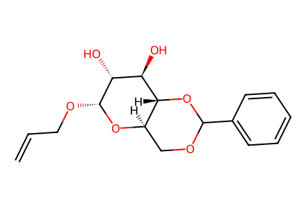
C=CCO[C@H]1O[C@@H]2COC(c3ccccc3)O[C@H]2[C@H](O)[C@H]1O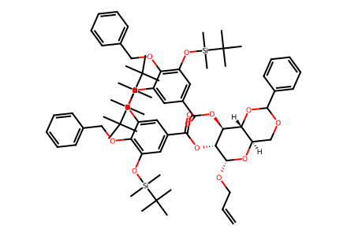
C=CCO[C@H]1O[C@@H]2COC(c3ccccc3)O[C@H]2[C@H](OC(=O)c2cc(O[Si](C)(C)C(C)(C)C)c(OCc3ccccc3)c(O[Si](C)(C)C(C)(C)C)c2)[C@H]1OC(=O)c1cc(O[Si](C)(C)C(C)(C)C)c(OCc2ccccc2)c(O[Si](C)(C)C(C)(C)C)c1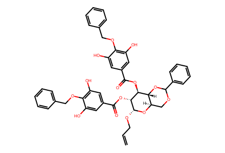
C=CCO[C@H]1O[C@@H]2COC(c3ccccc3)O[C@H]2[C@H](OC(=O)c2cc(O)c(OCc3ccccc3)c(O)c2)[C@H]1OC(=O)c1cc(O)c(OCc2ccccc2)c(O)c1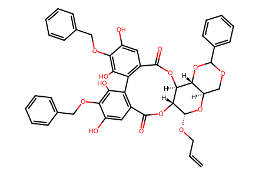
C=CCO[C@H]1O[C@@H]2COC(c3ccccc3)O[C@H]2[C@@H]2OC(=O)c3cc(O)c(OCc4ccccc4)c(O)c3-c3c(cc(O)c(OCc4ccccc4)c3O)C(=O)O[C@@H]12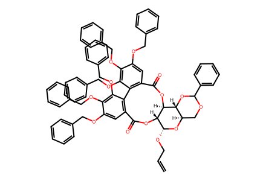
C=CCO[C@H]1O[C@@H]2COC(c3ccccc3)O[C@H]2[C@@H]2OC(=O)c3cc(OCc4ccccc4)c(OCc4ccccc4)c(OCc4ccccc4)c3-c3c(cc(OCc4ccccc4)c(OCc4ccccc4)c3OCc3ccccc3)C(=O)O[C@@H]12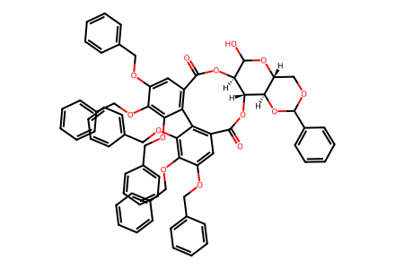
O=C1O[C@H]2[C@@H]3OC(c4ccccc4)OC[C@H]3OC(O)[C@@H]2OC(=O)c2cc(OCc3ccccc3)c(OCc3ccccc3)c(OCc3ccccc3)c2-c2c1cc(OCc1ccccc1)c(OCc1ccccc1)c2OCc1ccccc1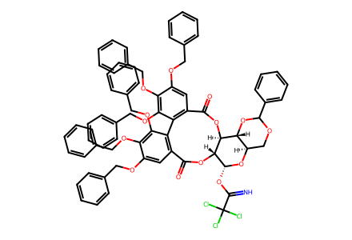
N=C(O[C@H]1O[C@@H]2COC(c3ccccc3)O[C@H]2[C@@H]2OC(=O)c3cc(OCc4ccccc4)c(OCc4ccccc4)c(OCc4ccccc4)c3-c3c(cc(OCc4ccccc4)c(OCc4ccccc4)c3OCc3ccccc3)C(=O)O[C@@H]12)C(Cl)(Cl)Cl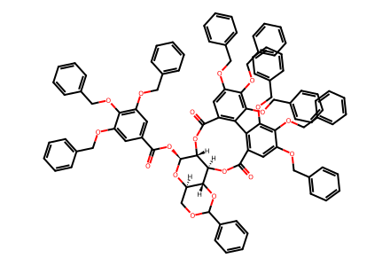
O=C(O[C@@H]1O[C@@H]2COC(c3ccccc3)O[C@H]2[C@@H]2OC(=O)c3cc(OCc4ccccc4)c(OCc4ccccc4)c(OCc4ccccc4)c3-c3c(cc(OCc4ccccc4)c(OCc4ccccc4)c3OCc3ccccc3)C(=O)O[C@@H]12)c1cc(OCc2ccccc2)c(OCc2ccccc2)c(OCc2ccccc2)c1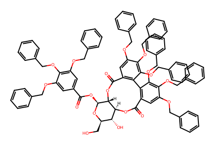
O=C(O[C@@H]1O[C@H](CO)[C@@H](O)[C@@H]2OC(=O)c3cc(OCc4ccccc4)c(OCc4ccccc4)c(OCc4ccccc4)c3-c3c(cc(OCc4ccccc4)c(OCc4ccccc4)c3OCc3ccccc3)C(=O)O[C@@H]12)c1cc(OCc2ccccc2)c(OCc2ccccc2)c(OCc2ccccc2)c1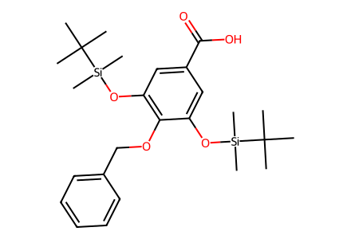
CC(C)(C)[Si](C)(C)Oc1cc(C(=O)O)cc(O[Si](C)(C)C(C)(C)C)c1OCc1ccccc1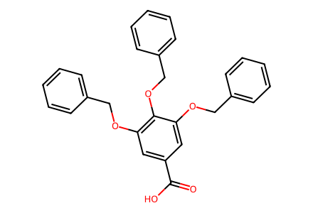
O=C(O)c1cc(OCc2ccccc2)c(OCc2ccccc2)c(OCc2ccccc2)c1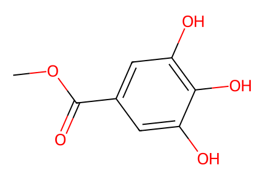
COC(=O)c1cc(O)c(O)c(O)c1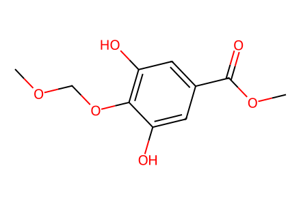
COCOc1c(O)cc(C(=O)OC)cc1O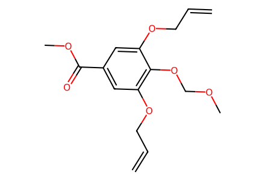
C=CCOc1cc(C(=O)OC)cc(OCC=C)c1OCOC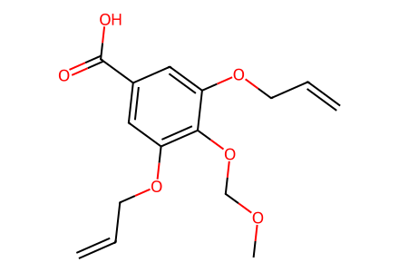
C=CCOc1cc(C(=O)O)cc(OCC=C)c1OCOC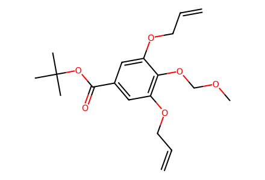
C=CCOc1cc(C(=O)OC(C)(C)C)cc(OCC=C)c1OCOC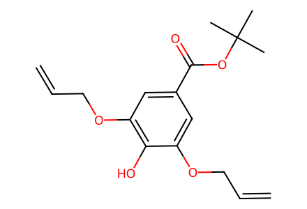
C=CCOc1cc(C(=O)OC(C)(C)C)cc(OCC=C)c1O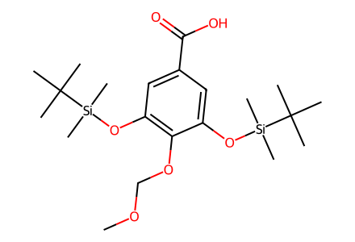
COCOc1c(O[Si](C)(C)C(C)(C)C)cc(C(=O)O)cc1O[Si](C)(C)C(C)(C)C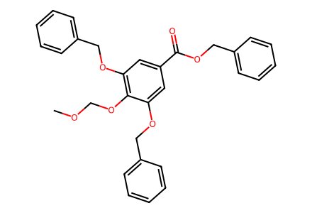
COCOc1c(OCc2ccccc2)cc(C(=O)OCc2ccccc2)cc1OCc1ccccc1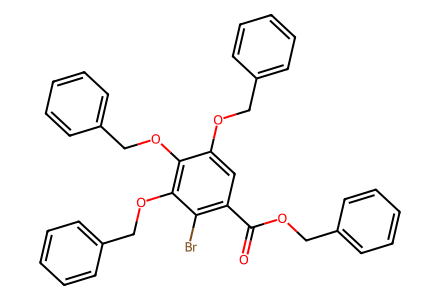
O=C(OCc1ccccc1)c1cc(OCc2ccccc2)c(OCc2ccccc2)c(OCc2ccccc2)c1Br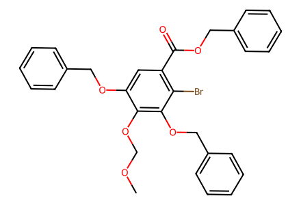
COCOc1c(OCc2ccccc2)cc(C(=O)OCc2ccccc2)c(Br)c1OCc1ccccc1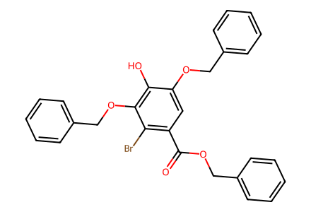
O=C(OCc1ccccc1)c1cc(OCc2ccccc2)c(O)c(OCc2ccccc2)c1Br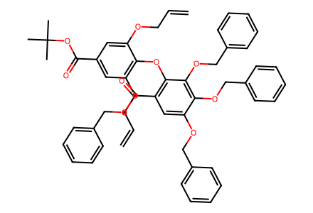
C=CCOc1cc(C(=O)OC(C)(C)C)cc(OCC=C)c1Oc1c(C(=O)OCc2ccccc2)cc(OCc2ccccc2)c(OCc2ccccc2)c1OCc1ccccc1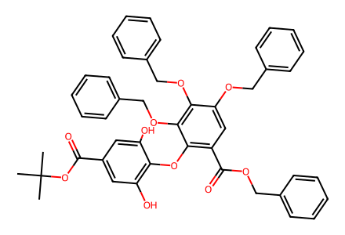
CC(C)(C)OC(=O)c1cc(O)c(Oc2c(C(=O)OCc3ccccc3)cc(OCc3ccccc3)c(OCc3ccccc3)c2OCc2ccccc2)c(O)c1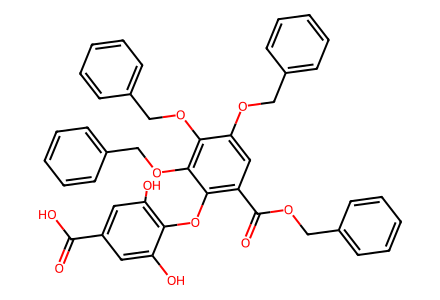
O=C(O)c1cc(O)c(Oc2c(C(=O)OCc3ccccc3)cc(OCc3ccccc3)c(OCc3ccccc3)c2OCc2ccccc2)c(O)c1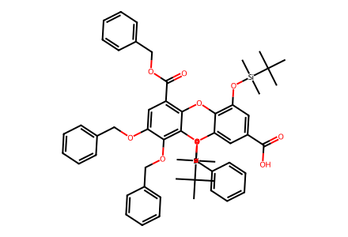
CC(C)(C)[Si](C)(C)Oc1cc(C(=O)O)cc(O[Si](C)(C)C(C)(C)C)c1Oc1c(C(=O)OCc2ccccc2)cc(OCc2ccccc2)c(OCc2ccccc2)c1OCc1ccccc1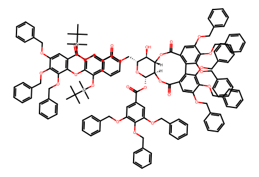
CC(C)(C)[Si](C)(C)Oc1cc(C(=O)OC[C@H]2O[C@@H](OC(=O)c3cc(OCc4ccccc4)c(OCc4ccccc4)c(OCc4ccccc4)c3)[C@@H]3OC(=O)c4cc(OCc5ccccc5)c(OCc5ccccc5)c(OCc5ccccc5)c4-c4c(cc(OCc5ccccc5)c(OCc5ccccc5)c4OCc4ccccc4)C(=O)O[C@H]3[C@@H]2O)cc(O[Si](C)(C)C(C)(C)C)c1Oc1c(C(=O)OCc2ccccc2)cc(OCc2ccccc2)c(OCc2ccccc2)c1OCc1ccccc1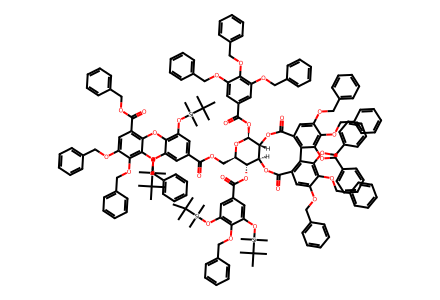
CC(C)(C)[Si](C)(C)Oc1cc(C(=O)O[C@H]2[C@@H]3OC(=O)c4cc(OCc5ccccc5)c(OCc5ccccc5)c(OCc5ccccc5)c4-c4c(cc(OCc5ccccc5)c(OCc5ccccc5)c4OCc4ccccc4)C(=O)O[C@H]3[C@H](OC(=O)c3cc(OCc4ccccc4)c(OCc4ccccc4)c(OCc4ccccc4)c3)O[C@@H]2COC(=O)c2cc(O[Si](C)(C)C(C)(C)C)c(Oc3c(C(=O)OCc4ccccc4)cc(OCc4ccccc4)c(OCc4ccccc4)c3OCc3ccccc3)c(O[Si](C)(C)C(C)(C)C)c2)cc(O[Si](C)(C)C(C)(C)C)c1OCc1ccccc1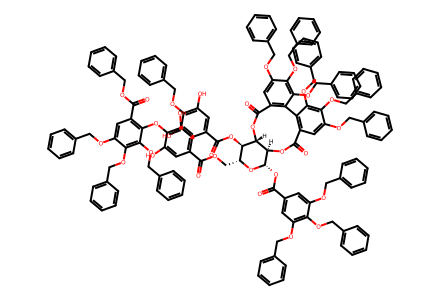
O=C(OC[C@H]1O[C@@H](OC(=O)c2cc(OCc3ccccc3)c(OCc3ccccc3)c(OCc3ccccc3)c2)[C@@H]2OC(=O)c3cc(OCc4ccccc4)c(OCc4ccccc4)c(OCc4ccccc4)c3-c3c(cc(OCc4ccccc4)c(OCc4ccccc4)c3OCc3ccccc3)C(=O)O[C@H]2[C@@H]1OC(=O)c1cc(O)c(OCc2ccccc2)c(O)c1)c1cc(O)c(Oc2c(C(=O)OCc3ccccc3)cc(OCc3ccccc3)c(OCc3ccccc3)c2OCc2ccccc2)c(O)c1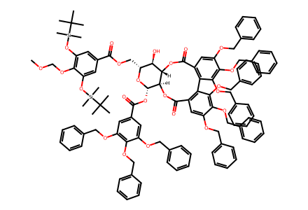
COCOc1c(O[Si](C)(C)C(C)(C)C)cc(C(=O)OC[C@H]2O[C@@H](OC(=O)c3cc(OCc4ccccc4)c(OCc4ccccc4)c(OCc4ccccc4)c3)[C@@H]3OC(=O)c4cc(OCc5ccccc5)c(OCc5ccccc5)c(OCc5ccccc5)c4-c4c(cc(OCc5ccccc5)c(OCc5ccccc5)c4OCc4ccccc4)C(=O)O[C@H]3[C@@H]2O)cc1O[Si](C)(C)C(C)(C)C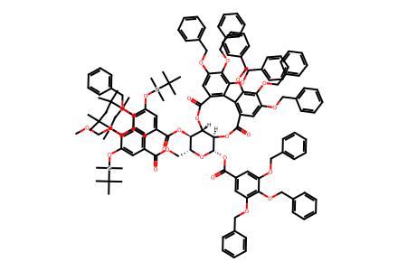
COCOc1c(O[Si](C)(C)C(C)(C)C)cc(C(=O)OC[C@H]2O[C@@H](OC(=O)c3cc(OCc4ccccc4)c(OCc4ccccc4)c(OCc4ccccc4)c3)[C@@H]3OC(=O)c4cc(OCc5ccccc5)c(OCc5ccccc5)c(OCc5ccccc5)c4-c4c(cc(OCc5ccccc5)c(OCc5ccccc5)c4OCc4ccccc4)C(=O)O[C@H]3[C@@H]2OC(=O)c2cc(O[Si](C)(C)C(C)(C)C)c(OCc3ccccc3)c(O[Si](C)(C)C(C)(C)C)c2)cc1O[Si](C)(C)C(C)(C)C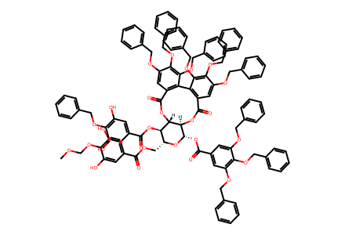
COCOc1c(O)cc(C(=O)OC[C@H]2O[C@@H](OC(=O)c3cc(OCc4ccccc4)c(OCc4ccccc4)c(OCc4ccccc4)c3)[C@@H]3OC(=O)c4cc(OCc5ccccc5)c(OCc5ccccc5)c(OCc5ccccc5)c4-c4c(cc(OCc5ccccc5)c(OCc5ccccc5)c4OCc4ccccc4)C(=O)O[C@H]3[C@@H]2OC(=O)c2cc(O)c(OCc3ccccc3)c(O)c2)cc1O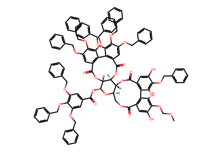
COCOc1c(O)cc2c(c1O)-c1c(cc(O)c(OCc3ccccc3)c1O)C(=O)O[C@H]1[C@@H]3OC(=O)c4cc(OCc5ccccc5)c(OCc5ccccc5)c(OCc5ccccc5)c4-c4c(cc(OCc5ccccc5)c(OCc5ccccc5)c4OCc4ccccc4)C(=O)O[C@H]3[C@H](OC(=O)c3cc(OCc4ccccc4)c(OCc4ccccc4)c(OCc4ccccc4)c3)O[C@@H]1COC2=O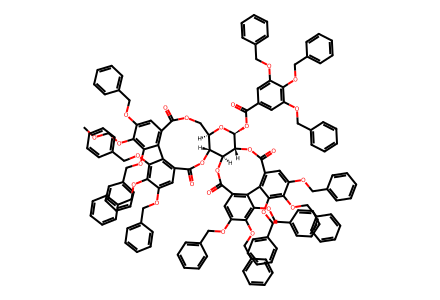
COCOc1c(OCc2ccccc2)cc2c(c1OCc1ccccc1)-c1c(cc(OCc3ccccc3)c(OCc3ccccc3)c1OCc1ccccc1)C(=O)O[C@H]1[C@@H]3OC(=O)c4cc(OCc5ccccc5)c(OCc5ccccc5)c(OCc5ccccc5)c4-c4c(cc(OCc5ccccc5)c(OCc5ccccc5)c4OCc4ccccc4)C(=O)O[C@H]3[C@H](OC(=O)c3cc(OCc4ccccc4)c(OCc4ccccc4)c(OCc4ccccc4)c3)O[C@@H]1COC2=O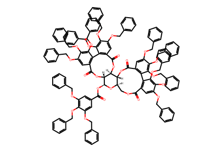
O=C(O[C@@H]1O[C@@H]2COC(=O)c3cc(OCc4ccccc4)c(O)c(OCc4ccccc4)c3-c3c(cc(OCc4ccccc4)c(OCc4ccccc4)c3OCc3ccccc3)C(=O)O[C@H]2[C@@H]2OC(=O)c3cc(OCc4ccccc4)c(OCc4ccccc4)c(OCc4ccccc4)c3-c3c(cc(OCc4ccccc4)c(OCc4ccccc4)c3OCc3ccccc3)C(=O)O[C@@H]12)c1cc(OCc2ccccc2)c(OCc2ccccc2)c(OCc2ccccc2)c1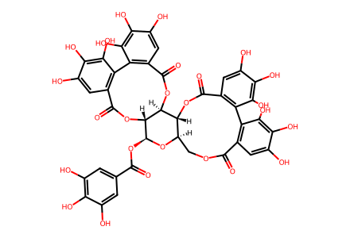
O=C(O[C@@H]1O[C@@H]2COC(=O)c3cc(O)c(O)c(O)c3-c3c(cc(O)c(O)c3O)C(=O)O[C@H]2[C@@H]2OC(=O)c3cc(O)c(O)c(O)c3-c3c(cc(O)c(O)c3O)C(=O)O[C@@H]12)c1cc(O)c(O)c(O)c1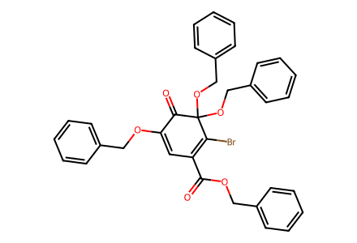
O=C(OCc1ccccc1)C1=C(Br)C(OCc2ccccc2)(OCc2ccccc2)C(=O)C(OCc2ccccc2)=C1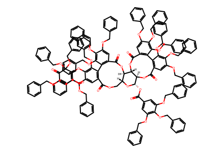
O=C(OCc1ccccc1)C1=C(Oc2c(OCc3ccccc3)cc3c(c2OCc2ccccc2)-c2c(cc(OCc4ccccc4)c(OCc4ccccc4)c2OCc2ccccc2)C(=O)O[C@H]2[C@@H]4OC(=O)c5cc(OCc6ccccc6)c(OCc6ccccc6)c(OCc6ccccc6)c5-c5c(cc(OCc6ccccc6)c(OCc6ccccc6)c5OCc5ccccc5)C(=O)O[C@H]4[C@H](OC(=O)c4cc(OCc5ccccc5)c(OCc5ccccc5)c(OCc5ccccc5)c4)O[C@@H]2COC3=O)C(OCc2ccccc2)(OCc2ccccc2)C(=O)C(OCc2ccccc2)=C1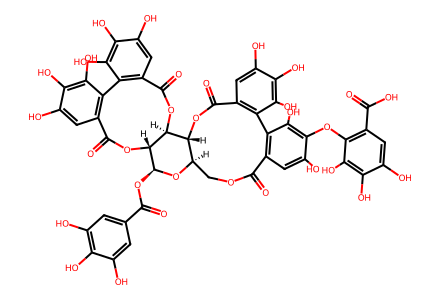
O=C(O[C@@H]1O[C@@H]2COC(=O)c3cc(O)c(Oc4c(C(=O)O)cc(O)c(O)c4O)c(O)c3-c3c(cc(O)c(O)c3O)C(=O)O[C@H]2[C@@H]2OC(=O)c3cc(O)c(O)c(O)c3-c3c(cc(O)c(O)c3O)C(=O)O[C@@H]12)c1cc(O)c(O)c(O)c1
C=CCO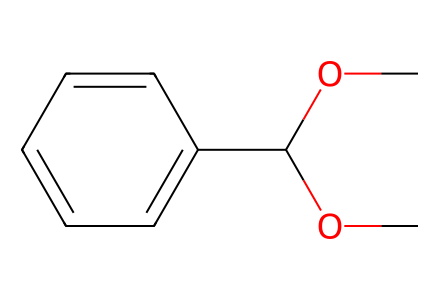
COC(OC)c1ccccc1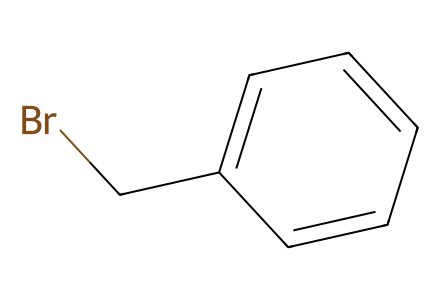
BrCc1ccccc1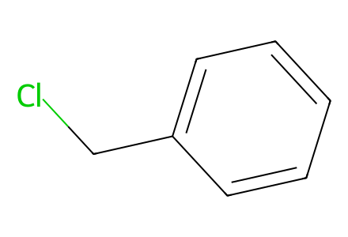
ClCc1ccccc1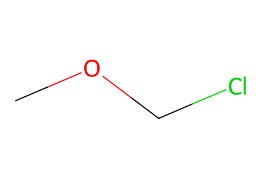
COCCl
C=CCBr
CC(C)(C)O
CC(C)(C)[Si](C)(C)Cl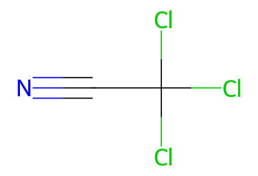
N#CC(Cl)(Cl)Cl